(카토 트레일러)
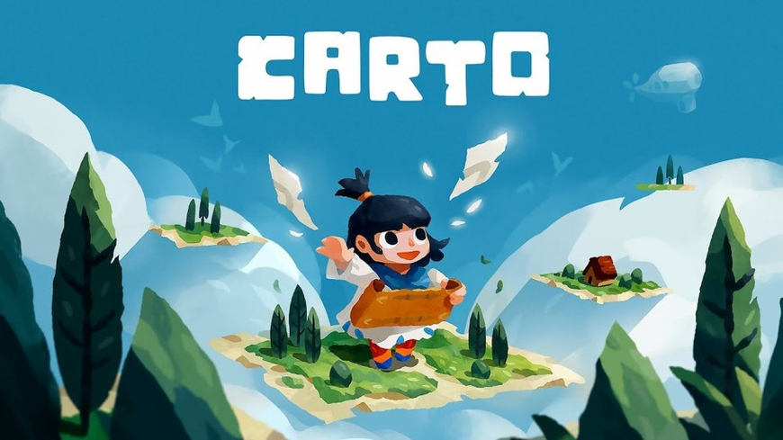
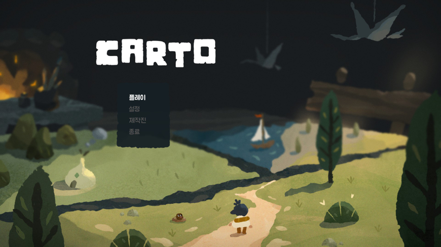
(한글화가 굉장히 잘 되어있다.)
Carto는 주인공이 사랑스럽고 유쾌하며 믿을 수 없을 정도로 섬세하며 까다로운 게임입니다. 지도 제작자로서 주인공은 마법의 지도 조각을 채우기 위해 세계를 여행하며 잃어버린 할머니를 찾는 모험을 떠납니다.
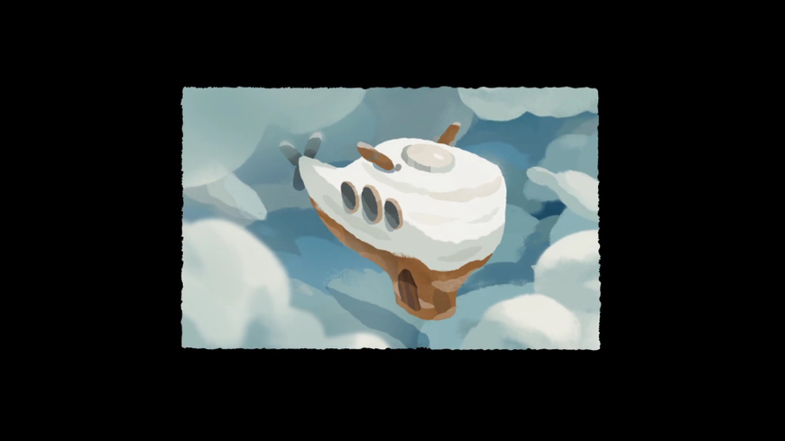
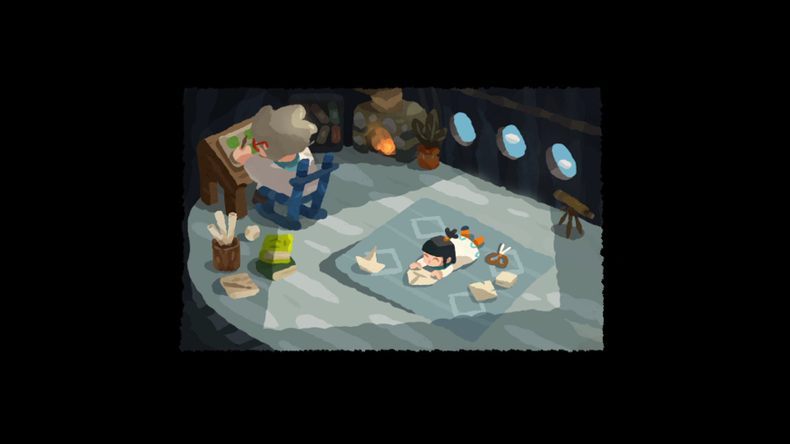
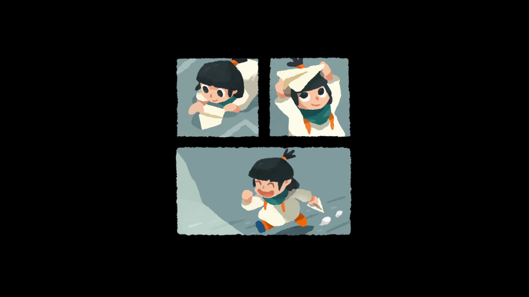
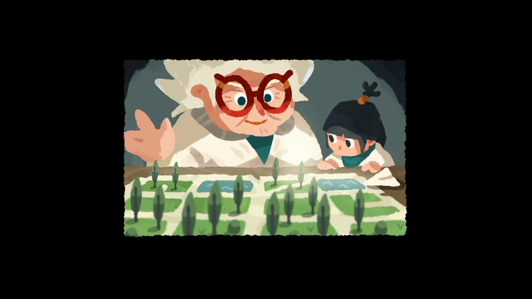
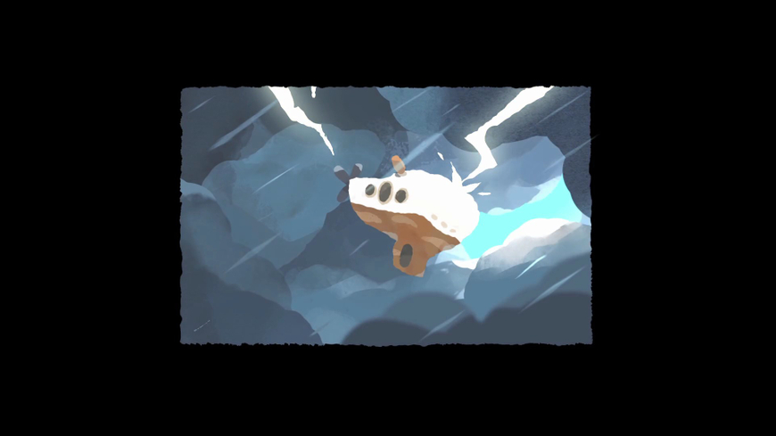
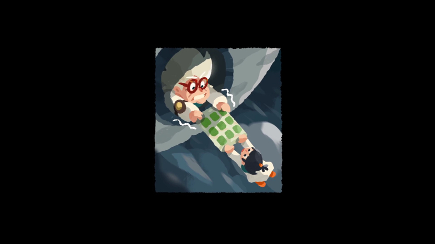
(시작할때 나오는 영상입니다. 할머니와 카토가 떨어지게 되고 카토가 할머니를 찾는 것이 스토리의 큰 줄기입니다.)
게임의 세계는 지도 화면에서 연결하고 조작할 수 있는 사각형 타일로 나뉩니다.
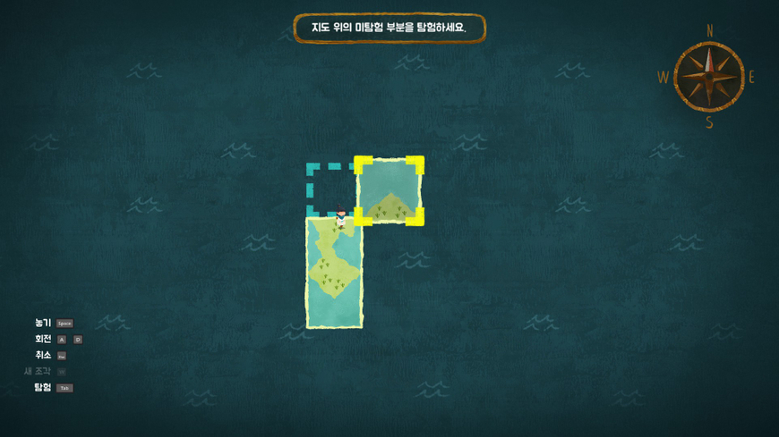
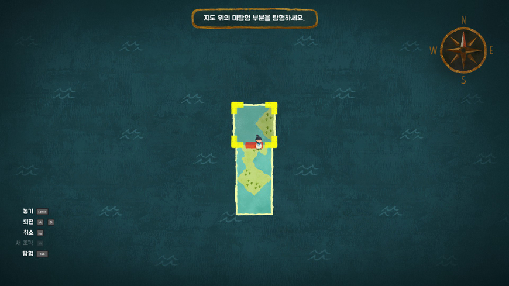
그러나 타일 경계를 연결하려면 도로, 강, 숲과 같은 지형적 특징이 일치해야 합니다. 윗 사진처럼 지도에서 퍼즐을 바꿀때마다 실시간으로 세상이 바뀝니다.
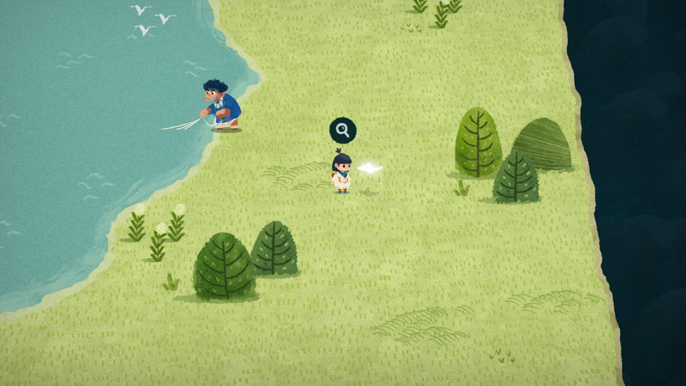
(지도 조각입니다. 이 지도조각이 추가돼서 타일이 되고 이 타일들을 조합해서 경로가 만들어지고 퍼즐을 풀 수 있습니다.)
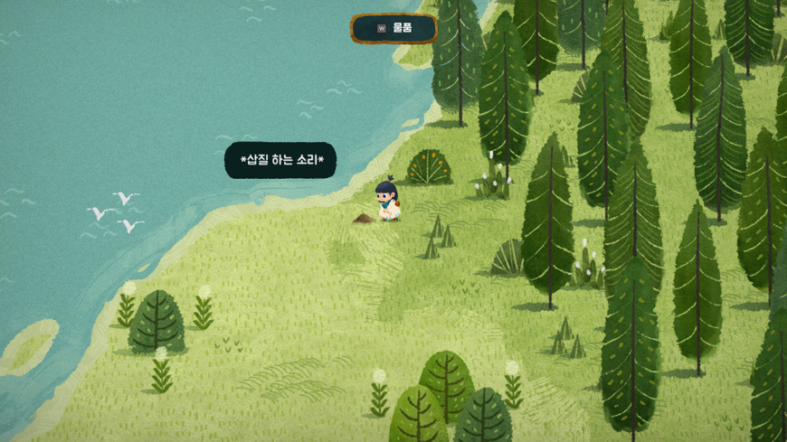
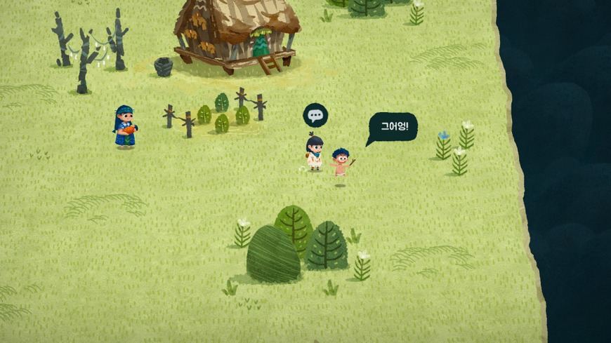
호수가 나타나기도 하며 매우 큰 숲이 나타나기도 하고 (퍼즐을 풀면 ) 숨겨져있던 캐릭터가 등장하기도 합니다. 또한 수동으로 걷는 대신 캐릭터가 있는 타일을 원하는 위치로 이동하기만 하면 캐릭터도 타일과 함께 이동합니다.
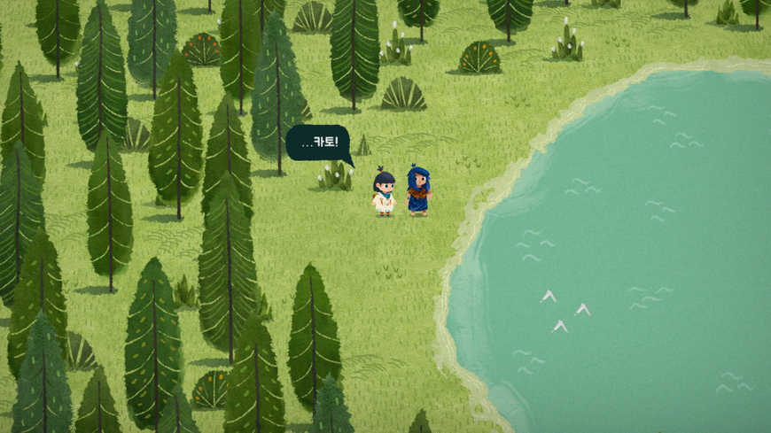
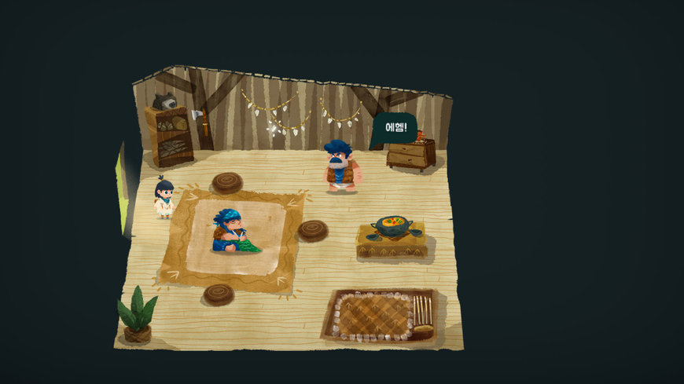
(캐릭터들이 굉장히 귀엽습니다.)
Carto는 경로 생성에 집중할 때도 재밌지만, 메커니즘을 사용하여 퍼즐을 풀 때 가장 재밌습니다. 이러한 상황에는 일반적으로 영리한 수수께끼를 풀거나 시각적 힌트를 사용하여 타일의 방향을 결정하여 푸는 것이 재밌습니다. 조합에 따라 식생이 바뀌고 그 타일에 사는 식물들이 바뀌기도 하는 것 같습니다.
다만 Carto 캐릭터는 귀엽고 사운드는 굉장히 편안하지만 플레이 초반임에도 불구하고 퍼즐이 꽤나 어려운 것 같습니다. 지도를 오랫동안 쳐다보면서 경로를 만드는 것도 난이도가 있는데 타일을 회전하여 미션 성공으로 가는 하나의 길을 찾는 것이 상당히 어렵습니다. 하지만 이런 난이도는 게임 분위기에 의해 중화되기도 합니다. 그래픽은 마치 동화책을 연상시키며 사운드 또한 퍼즐을 푸는 것을 방해하지 않고 게임에 열중하게 해주는 것 같습니다.
Carto의 유머러스한 캐릭터와 사람들을 하나로 모으면서 길을 찾는 스토리는 아직 많이 진행해서 잘 모르겠으나 게임 분위기 자체는 굉장히 귀엽고 지금까지의 스토리는 훈훈하며 힐링게임입니다.
다만 방송용으로는 좋을지는 모르겠습니다. 혼자서 하기에는 꽤재밌을 것 같지만 방송용으로서는 긴장감이 좀 부족할수도 있을수도 있고 퍼즐 푸는게 꽤 힘들 것 같기도 합니다. 데모버전이 있으니 교수님이나 학습자분들이 한 번 해보셨으면 좋겠습니다.
-평가
스팀평가 97퍼센트로 '압도적으로 긍정적'
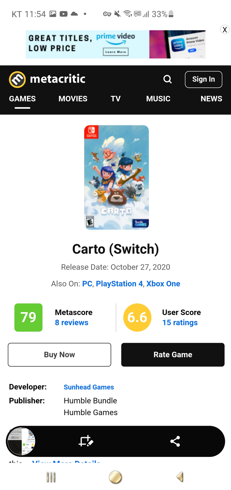
메타스코어는 79점입니다.
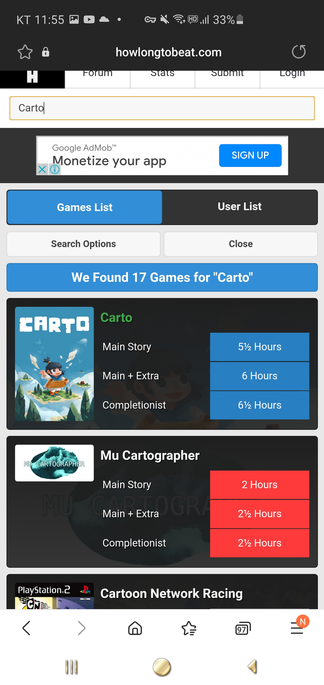
플탐은 5~6시간 정도 소요되며 스팀에서 20500원에 판매중입니다.
배급사와 개발자, 발매일자입니다.
후원댓글 6개
댓글 6개 ▼